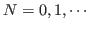

listp object [関数]
-
-
オブジェクトがconsのインスタンスかもしくはNILならば、Tを返す。
consp object [関数]
-
-
(not (atom object))と同一である。(consp '())はNILである。
car list [関数]
-
-
listの最初の要素を返す。NILのcarはNILである。
atomのcarはエラーとなる。(car '(1 2 3)) = 1
cdr list [関数]
-
-
listの最初の要素を削除した残りのリストを返す。NILのcdrはNILである。
atomのcdrはエラーとなる。(cdr '(1 2 3)) = (2 3)
cadr list [関数]
-
- (cadr list) = (car (cdr list))
cddr list [関数]
-
- (cddr list) = (cdr (cdr list))
cdar list [関数]
-
- (cdar list) = (cdr (car list))
caar list [関数]
-
- (caar list) = (car (car list))
caddr list [関数]
-
- (caddr list) = (car (cdr (cdr list)))
caadr list [関数]
-
- (caadr list) = (car (car (cdr list)))
cadar list [関数]
-
- (cadar list) = (car (cdr (car list)))
caaar list [関数]
-
- (caaar list) = (car (car (car list)))
cdadr list [関数]
-
- (cdadr list) = (cdr (car (cdr list)))
cdaar list [関数]
-
- (cdaar list) = (cdr (car (car list)))
cdddr list [関数]
-
- (cdddr list) = (cdr (cdr (cdr list)))
cddar list [関数]
-
- (cddar list) = (cdr (cdr (car list)))
first list [関数]
-
- listの最初の要素を取り出す。
second, third, fourth, fifth, sixth, seventh, eighthもまた定義されている。(first list) = (car list)
nth count list [関数]
-
-
list内のcount番目の要素を返す。
(nth 1 list)は、(second list)あるいは(elt list 1)と等価である。
nthcdr count list [関数]
-
-
listにcdrをcount回適用した後のリストを返す。
last list [関数]
-
-
listの最後の要素でなく、最後のconsを返す。
butlast list &optional (n 1) [関数]
-
- listの最後からn個の要素を削除したリストを返す。
cons car cdr [関数]
-
-
carがcarでcdrがcdrであるような新しいconsを作る。
list {element}* [関数]
-
- elementを要素とするリストを作る。
list* {element}* [関数]
-
-
elementを要素とするリストを作る。しかし、最後の要素はconsされるため、
atomであってはならない。
例えば、(list* 1 2 3 '(4 5)) = (1 2 3 4 5)である。
list-length list [関数]
-
-
listの長さを返す。listは、環状リストでも良い。
make-list size &key (:initial-element nil) [関数]
-
-
size長さで要素が全て:initial-elementのリストを作る。
rplaca cons a [関数]
-
-
consのcarをaに置き換える。
setfとcarの使用を推薦する。
(rplaca cons a) = (setf (car cons) a)
rplacd cons d [関数]
-
-
consのcdrをdに置き換える。
setfとcdrの使用を推薦する。
(rplacd cons d) = (setf (cdr cons) d)
memq item list [関数]
-
-
memberに似ている。しかしテストはいつもeqで行う。
member item list &key :key :test :test-not [関数]
-
- listの中から条件にあった要素を探す。
listの中からitemを探索し、:testの条件にあったものがなければNILを返す。
見つかったならば、それ以降をリストとして返す。この探索は、最上位のリストに対して
行なわれる。:testのデフォルトは#'eqである。
(member 'a '(g (a y) b a d g e a y))=(a d g e a y)
assq item alist [関数]
-
-
assoc item alist &key :key :test :test-not [関数]
-
- alistの要素のcarが:testの条件にあった最初のものを返す。
合わなければ、NILを返す。
:testのデフォルトは#'eqである。
(assoc '2 '((1 d t y)(2 g h t)(3 e x g))=(2 g h t)
rassoc item alist [関数]
-
-
cdrがitemに等しいalistのなかの最初の組を返す。
pairlis l1 l2 &optional alist [関数]
-
-
l1とl2の中の一致する要素を対にしたリストを作る。
もしalistが与えられたとき、
l1とl2から作られた対リストの最後に連結させる。
acons key val alist [関数]
-
-
alistにkey valの組を付け加える。
(cons (cons key val) alist)と同等である。
append {list}* [関数]
-
-
新しいリストを形成するためにlistを連結させる。
最後のリストを除いて、listのなかの全ての要素はコピーされる。
nconc {list}* [関数]
-
-
それぞれのlistの最後のcdrを置き換える事によって、listを
破壊的に(destructively)連結する。
subst new old tree [関数]
-
-
treeの中のすべてのoldをnewに置き換える。
flatten complex-list [関数]
-
-
atomやいろんな深さのリストを含んだcomplex-listを、
１つの線形リストに変換する。そのリストは、
complex-listの中のトップレベルに全ての要素を置く。
(flatten '(a (b (c d) e))) = (a b c d e)
push item place [マクロ]
-
-
placeにバインドされたスタック(リスト)にitemを置く。
pop stack [マクロ]
-
-
stackから最初の要素を削除し、それを返す。
もしstackが空(NIL)ならば、NILを返す。
pushnew item place &key :test :test-not :key [マクロ]
-
-
もしitemがplaceのメンバーでないなら、
placeリストにitemを置く。
:test, :test-notと:key引数は、
member関数に送られる。
adjoin item list [関数]
-
-
もしitemがlistに含まれてないなら、listの最初に付け加える。
union list1 list2 &key (:test #'eq) (:test-not) (:key #'identity) [関数]
-
-
2つのリストの和集合を返す。
subsetp list1 list2 &key (:test #'eq) (:test-not) (:key #'identity) [関数]
-
- list1がlist2の部分集合であること、すなわち、
list1のそれぞれの要素がlist2のメンバーであることをテストする。
intersection list1 list2
&key (:test #'eq) (:test-not) (:key #'identity) [関数]
-
-
2つのリストlist1とlist2の積集合を返す。
set-difference list1 list2
&key (:test #'eq) (:test-not) (:key #'identity) [関数]
-
-
list1にのみ含まれていて
list2に含まれていない要素からなるリストを返す。
set-exclusive-or list1 list2
&key (:test #'eq) (:test-not) (:key #'identity) [関数]
-
-
list1およびlist2にのみ現れる要素からなるリストを返す。
list-insert item pos list [関数]
-
-
listのpos番目の要素としてitemを挿入する
（元のリストを変化させる）。
もしposがlistの長さより大きいなら、itemは最後に
nconcされる。
(list-insert 'x 2 '(a b c d)) = (a b x c d)
copy-tree tree [関数]
-
-
入れこリストであるtreeのコピーを返す。
しかし、環状参照はできない。環状リストは、
copy-objectでコピーできる。
実際に、copy-treeは(subst t t tree)と簡単に記述される。
mapc func arg-list &rest more-arg-lists [関数]
-
-
arg-listやmore-arg-listsそれぞれのN番目()の要素からなるリストに
funcを適用する。
適用結果は無視され、arg-listが返される。
mapcar func &rest arg-list [関数]
-
-
arg-listのそれぞれの要素にfuncをmapし、
その全ての結果のリストを作る。
mapcarを使う前に、dolistを試すこと。
mapcan func arg-list &rest more-arg-lists [関数]
-
-
arg-listのそれぞれの要素にfuncをmapし、
nconcを用いてその全ての結果のリストを作る。
nconcはNILに対して何もしないため、
mapcanは、arg-listの要素にフィルタをかける（選択する）
のに合っている。
2015-07-31